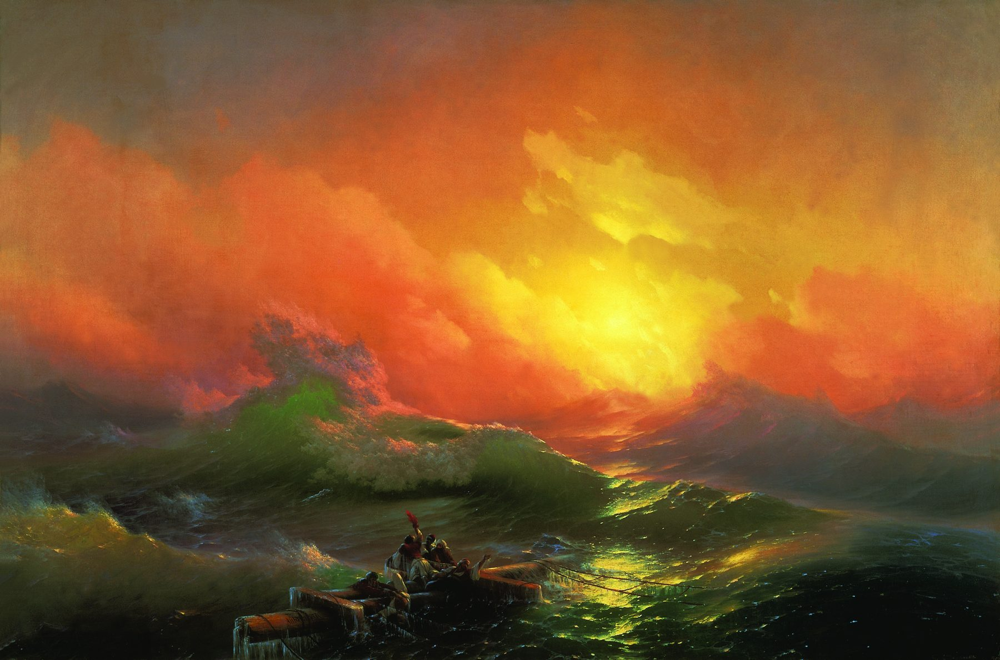
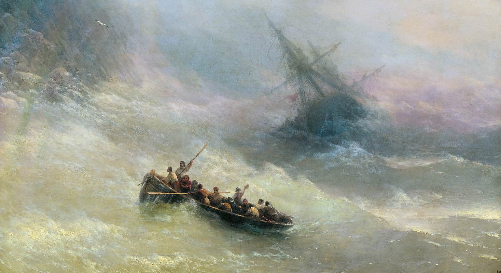

Айвазовский написал радугу так, как она выглядит в настоящий шторм: не аркой из учебника, а еле различимым свечением в водяной пыли. Приблизьте левый край полотна — цвет проступает прямо из брызг. Золотые точки — подсказки.
Полотно небольшое — метр на полтора, вчетверо меньше «Девятого вала». Айвазовский здесь берёт не размахом, а тем, что заставляет подойти вплотную.
Три детали, которые видит не каждый. 60 секунд, искать — тапом прямо по картине наверху.
Павел Третьяков собирал передвижников — тех, кто спорил с миром, а не любовался им. Самого известного и самого дорогого мариниста империи он почти не брал: в его собрании оказались считаные вещи Айвазовского. «Радуга» — одна из них, куплена прямо у художника.
Сначала полотно называлось «Восход солнца на Чёрном море». Айвазовский думал о рассвете, который заканчивает бурю. Но зритель запоминал не восход, а бледную дугу над лодкой — и название пришлось признать за картиной.
Поставьте радугу в центр, сделайте её яркой — получится открытка. Айвазовский увёл её к краю и почти растворил: чтобы зритель искал её сам. Найденная своими глазами надежда работает сильнее, чем показанная.
«Девятый вал» (1850) и «Радуга» (1873) — про одно: свет, который сильнее шторма. В первом случае это солнце, бьющее в упор. Во втором — то, что исчезнет через минуту. Между картинами двадцать три года и целая смена манеры.
Корабль уже проиграл. Он лежит на боку у скалистого берега, мачты завалены, и всё, что осталось экипажу, — шлюпка, спущенная на воду. Гребцы налегают на вёсла, один стоит в полный рост с багром, спиной к нам. И вот здесь, если отвести взгляд от лодки влево, в водяной пыли проступает цвет — радуга.
К 1873 году Айвазовский пишет море уже сорок лет, он знаменит по всей Европе и невероятно плодовит. У такой славы есть цена: зритель приходит за узнаваемым — бурей, штилем, лунной дорожкой. «Радуга» — картина, где мастер меняет не сюжет, а инструмент. Сюжет прежний: кораблекрушение, спасательная шлюпка, стихия. Инструмент новый — цвет.
Посмотрите на воду: чистого синего здесь нет, как нет и чёрного. Гребни идут от прозрачно-бирюзового к пепельно-розовому и белому, скалы уходят в лиловую дымку, а небо и море сходятся так, что горизонта не найти. Это уже не романтический шторм с контрастом света и тьмы — это шторм, увиденный как единая световая среда. Через несколько лет к похожему придут французские импрессионисты, но Айвазовский шёл своей дорогой и от романтизма не отрекался.
Первоначальное название полотна — «Восход солнца на Чёрном море»: художник имел в виду рассвет, который прекращает бурю. Но главным для зрителя оказалась радуга — она и дала картине имя.
У картины есть ещё одно отличие от соседки по залу. «Девятый вал» купил император. «Радугу» — Павел Третьяков, человек, который Айвазовского в свою коллекцию почти не пускал: он собирал передвижников, живопись мысли и укора, а не любования. Тем ценнее исключение — «Радуга» вошла в число немногих работ мариниста в его собрании и с тех пор висит в Третьяковской галерее.
Художник одним абзацем. Иван Константинович Айвазовский (1817–1900), уроженец Феодосии. К моменту «Радуги» — академик, первый живописец Главного морского штаба, автор уже нескольких тысяч полотен. Подробное досье — на странице зала.
Настоящая радуга в штормовых брызгах не имеет чёткой границы: она рождается в водяной взвеси и живёт секунды. Айвазовский пишет её не линией, а сменой температуры цвета — тёплое желтоватое свечение переходит в холодное зеленоватое прямо в толще пены. Отсюда эффект: если смотреть на картину бегло, радуги нет вовсе; если задержаться — она проступает и уже не исчезает. Это ровно тот опыт, который бывает у человека в море.
Шлюпка идёт по диагонали снизу слева вверх направо — прямо к гибнущему кораблю, то есть от нас к беде. Радуга лежит на встречной диагонали, слева. Глаз мечется между ними, и в этом движении и есть сюжет: спасение не показано, оно только возможно. Айвазовский не даёт зрителю успокоиться.
Сравните с «Девятым валом» 1850 года: там — тёмный низ, пылающий верх, чёткий контраст, романтический эффект в чистом виде. Здесь — общий светлый ключ, полутона, размытые границы. Драма никуда не делась, но она больше не кричит. Так работает мастер, которому нечего доказывать в технике эффекта и который занялся другим — светом как средой.


Подсказка: на два первых вопроса невозможно ответить, не разглядев картину. Зум наверху — в помощь.
Белая чайка — слева, над гребнями, у самых скал. Единственное существо, которому этот шторм не страшен.
Багор поднят почти вертикально — им отталкиваются от скал и подцепляют людей из воды. Приблизьте нос шлюпки.
Миф. Третьяков собирал передвижников и Айвазовского почти не брал — «Радуга» вошла в число тех немногих работ, которые он купил лично у художника.
Верно: «Восход солнца на Чёрном море». Имя сменилось, когда стало ясно, что зритель запоминает радугу, а не рассвет.
Итог дня: 0 из 60 (игра — 30, вопросы — 30).
Радуга — та самая, ради которой картина сменила название.
Музей делает крошечная команда — и делает бесплатным для всех. Если вы нашли на этом полотне радугу, — поддержите проект.
❤ Как поддержатьУ каждого дня года свой повод — день рождения художника, дата картины, событие. Листайте стрелками.